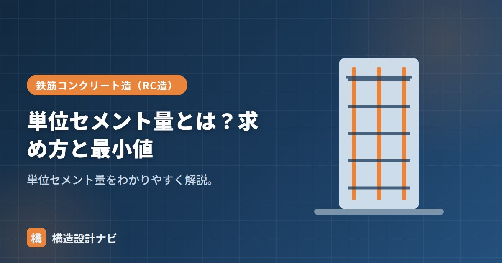

単位セメント量とは？求め方と最小値

単位セメント量とは、コンクリート1m³に含まれるセメントの質量（kg/m³）です。強度・耐久性・施工性に関わる重要な配合値で、コンクリートの調合を決める配合設計において必ず算出される数値の一つです。単位セメント量が適切でないと、強度不足やワーカビリティの悪化、あるいはひび割れの増加といった問題につながるため、設計時にしっかり確認しておく必要があります。
- 単位セメント量は1m³中のセメント質量で、単位水量÷水セメント比で求める
- JASS5では最小値270kg/m³程度が目安として定められている
- 多すぎると水和熱・乾燥収縮が増え、少なすぎるとワーカビリティ・耐久性が低下する
意味
セメントが多い配合を富配合、少ない配合を貧配合といいます。セメント量は強度・水密性を高めますが、多すぎると水和熱や乾燥収縮が増えます。
求め方・計算
単位セメント量は、単位水量と水セメント比から求めます。この2つの値は配合設計において最初に決定される基本パラメータであり、単位セメント量はそこから導かれる結果の値という位置づけです。そのため、単位セメント量だけを単独で調整するのではなく、常に単位水量・水セメント比とのバランスを意識する必要があります。
強度・耐久性からW/Cの上限が、施工性から単位水量の上限（185kg/m³）が決まると、必要なセメント量が定まります。もう少し実務的に考えると、まず必要な圧縮強度から水セメント比の上限を決め、次に施工性（打込みやすさ）から必要な単位水量を決め、この2つの値から単位セメント量を逆算するという流れになります。
計算例
例えば、必要な水セメント比が55%、単位水量が160kg/m³の場合を考えます。
この例では最小値270kg/m³を上回っているため問題ありませんが、水セメント比を大きく（セメントを相対的に少なく）取りすぎると、最小値を下回ってしまうことがあります。その場合は水セメント比を見直すか、単位水量を増やす必要があり、単位水量の上限（185kg/m³程度）とのバランスを取りながら配合を調整します。
最小値とワーカビリティの関係
セメント量が少なすぎると、ペーストが不足してパサつき、ワーカビリティが悪化し、水密性・耐久性も低下します。これを防ぐため、JASS5では単位セメント量の最小値を270kg/m³程度と定めています（条件により異なる）。一方で多すぎると発熱・収縮が増えるため、上限にも配慮します。
単位セメント量は多ければよいというものではありません。多すぎるとマスコンクリートで問題になる水和熱によるひび割れのリスクが高まるほか、材料コストも上がります。必要な強度・耐久性・施工性を満たす範囲で、過不足のない値に調整することが大切です。
配合計画書の承認では、単位セメント量が最小値ぎりぎりの申請になっていないかをまず確認します。骨材の粒度が変わるだけで練り上がりの印象は変わるため、承認後も試し練りの結果を自分の目で見るようにしています。
単位セメント量の最小値
単位セメント量には下限が定められています。強度上は足りていても、少なすぎるとコンクリートとして成立しないためです。
| 条件 | 単位セメント量の最小値 | 理由 |
|---|---|---|
| 一般のコンクリート | 270 kg/m³以上 | ワーカビリティと水密性の確保 |
| 高流動・水中コンクリートなど | より大きい値（用途による） | 材料分離抵抗性の確保 |
| 粗骨材が大きい場合 | やや小さくできる | ペーストで包む表面積が減るため |
セメント量が少なすぎると、骨材を包むペーストが足りずにぼそぼそした状態になり、締固めても密実になりません。結果として水密性が落ち、鉄筋の防錆にも支障が出ます。「強度が足りていればセメントは少ないほど経済的」とはいかない理由がここにあります。
多すぎる場合の弊害
| 弊害 | 内容 |
|---|---|
| 水和熱の増大 | セメントが多いほど発熱量が増え、大断面では温度ひび割れのリスクが高まる |
| 乾燥収縮の増大 | 収縮するのはペースト部分。セメントが多い＝ペーストが多いほど収縮量が大きい |
| コストの増加 | コンクリートの材料費で最も高いのがセメント |
| 自己収縮 | 高強度コンクリートでは、水和による内部の水分消費で収縮が生じる |
単位セメント量は「下限：ワーカビリティ・水密性から270kg/m³以上」「上限：ひび割れ・発熱・コストから抑えたい」という両側からの制約の中で決まります。一般的な建築用コンクリート（Fc21〜30）では、270〜380kg/m³程度に収まることが多くなります。この範囲を大きく外れる配合を見たときは、その理由を確認しておくとよいでしょう。
よくある質問
Q1. 単位セメント量が270kg/m³未満だとどうなりますか？
骨材を包むセメントペーストが不足し、ワーカビリティが著しく低下します。ぼそぼそした状態になって締固めが困難になり、内部に空隙が残りやすくなります。その結果、水密性が確保できず、鉄筋の防錆性能も低下します。強度計算上は成立しても、耐久性の面で問題が生じるため、下限値が定められています。
Q2. 単位セメント量と呼び強度はどう関係しますか？
呼び強度が高いほど、必要な単位セメント量は多くなります。強度は水セメント比で決まるため、高い強度にはW/Cを小さくする必要があり、単位水量を一定とすればセメント量が増えるからです。たとえばW＝175kg/m³のとき、W/C＝60%ならC＝292kg/m³、W/C＝45%ならC＝389kg/m³となります。
Q3. セメント量を減らして混和材で補うことはできますか？
できます。高炉スラグ微粉末やフライアッシュでセメントの一部を置き換える方法で、水和熱の低減やコストの抑制に有効です。ただし置き換えた分だけ初期強度の発現が遅れるため、養生期間の延長が必要になります。また、単位セメント量の下限は結合材全体（セメント＋混和材）で考えるのか、セメント単体で考えるのか、仕様書で確認が必要です。
まとめ
- 単位セメント量はコンクリート1m³中のセメント質量（kg/m³）。
- 求め方は C＝単位水量 ÷ 水セメント比。
- 最小270kg/m³程度。少ないとワーカビリティ・耐久性が低下、多いと発熱・収縮が増える。
- 水セメント比・単位水量とのバランスをとりながら、過不足なく設定する。